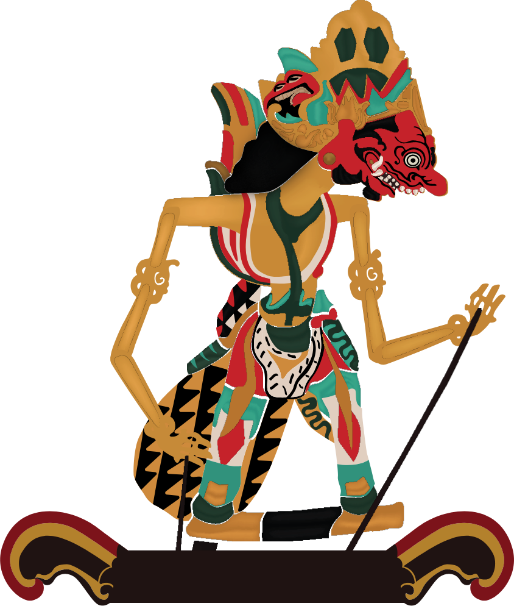
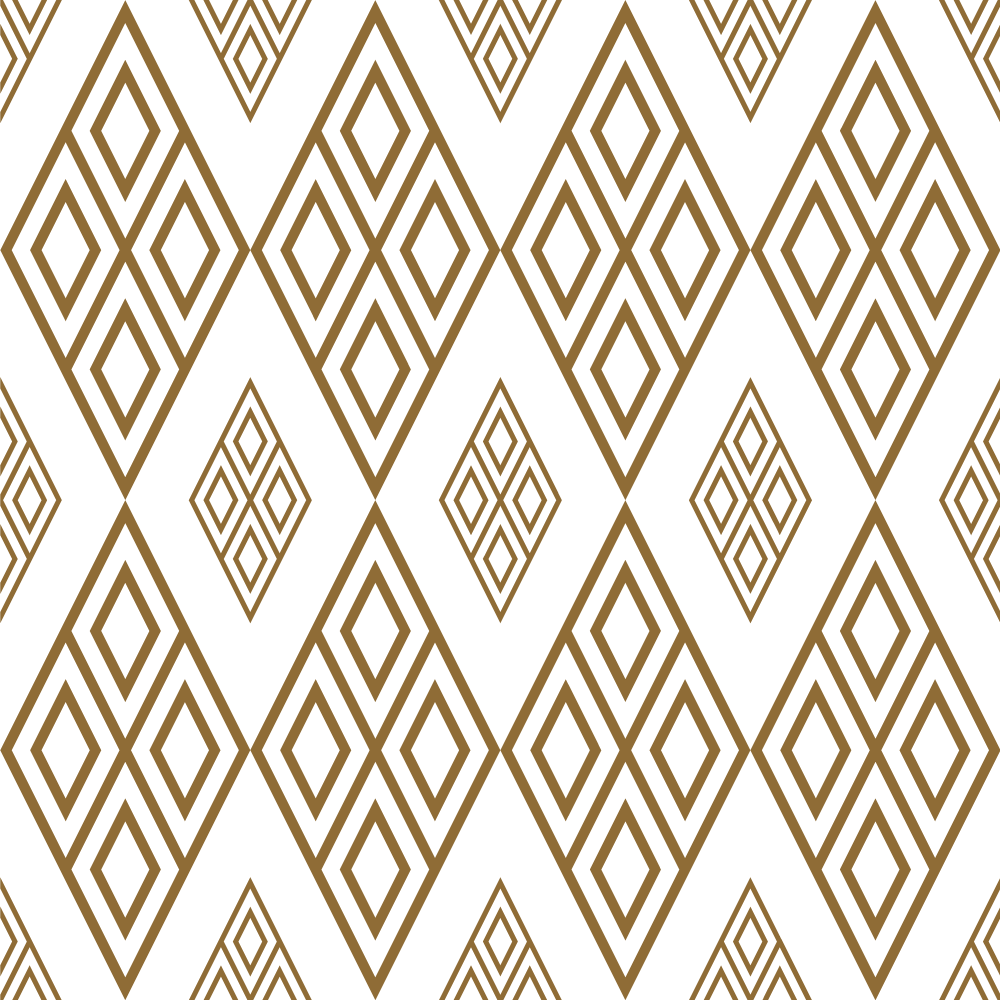
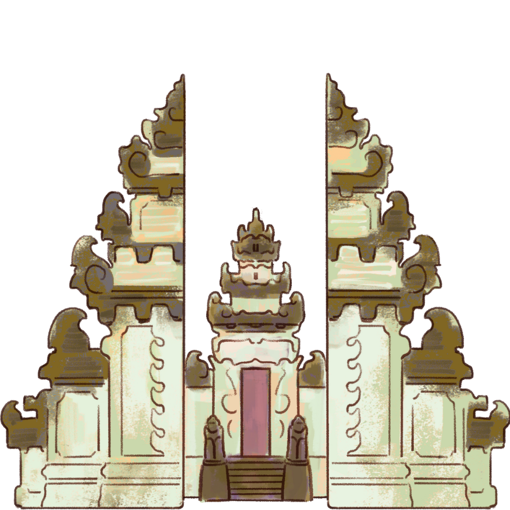
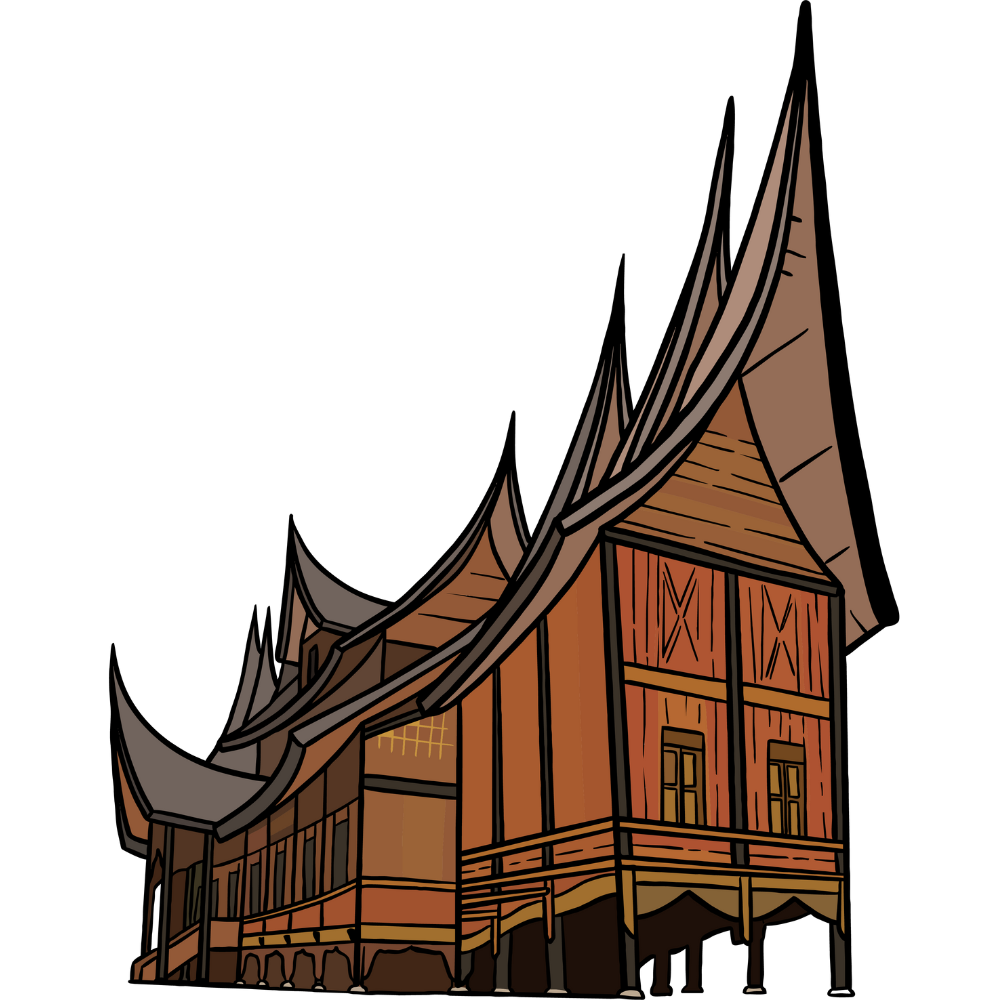
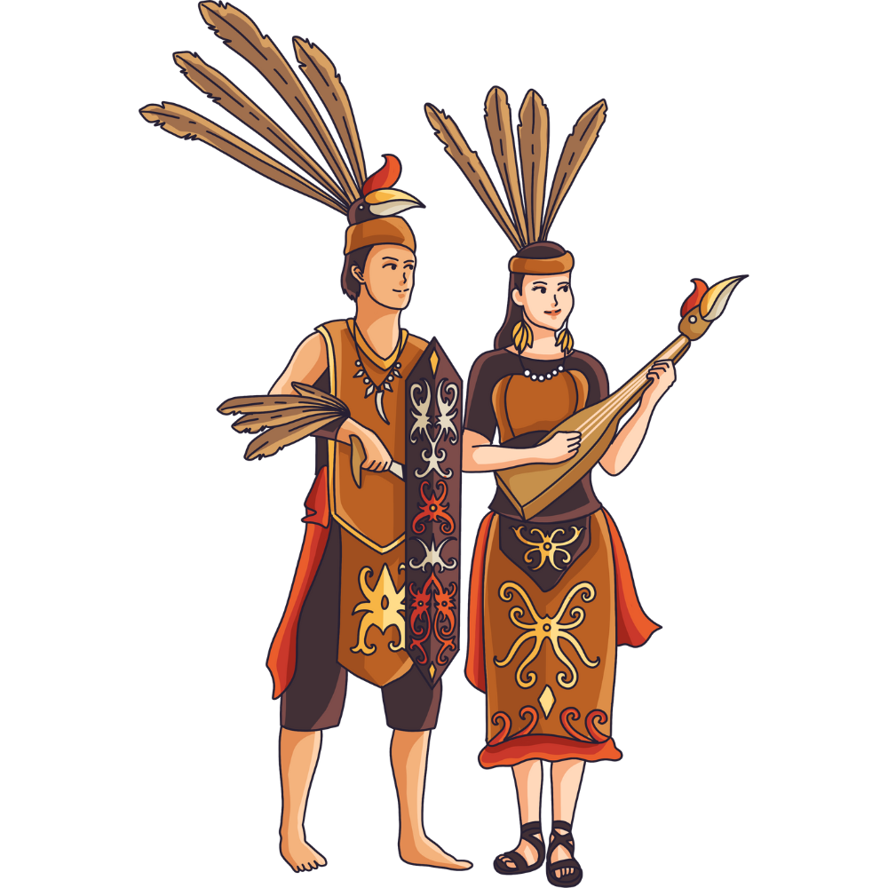
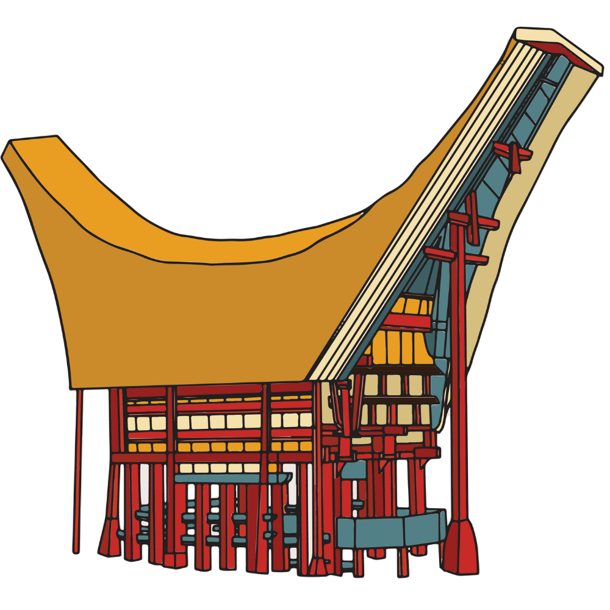
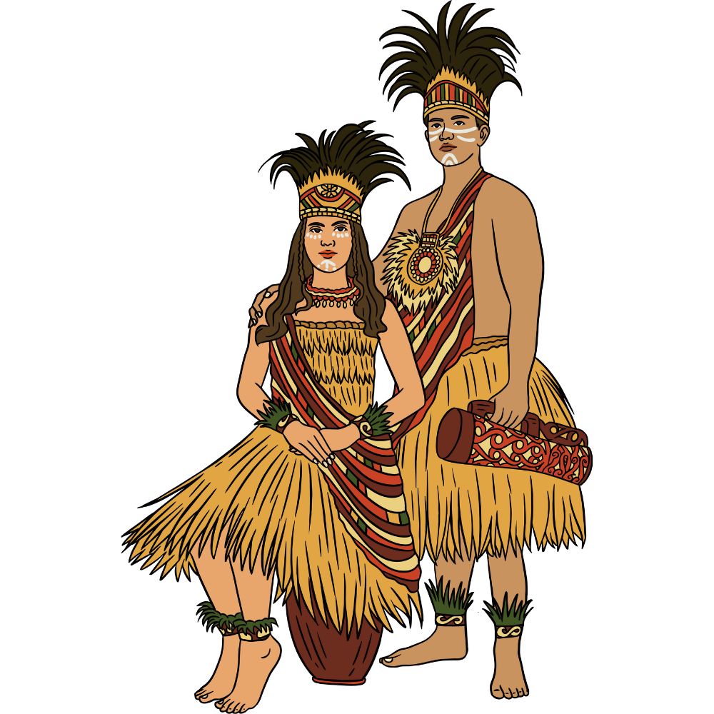

Budaya di
Jawa

Budaya Jawa yang diminati di luar negeri adalah Wayang kulit, Keris, Batik, Kebaya, dan Gamelan. Di
Malaysia dan Filipina dikenal istilah keris karena pengaruh Majapahit.
Budaya di
Bali
Bali juga memiliki keunikan dalam budaya yang dimilikinya seperti kesenian Bali meliputi
tarian-tarian Bali seperti Tari Pendet, Tari Kecak, Tari Barong dan kegiatan sakral adat istiadat
seperti ritual upacara-upacara adat yang sangat kental


Budaya di
Sumatera
Budaya Minangkabau sangat beragam, mulai dari pacu kudo, pacu jawi, seni tari, seni randai, tradisi
makan bajamba, keroncong Minang, hingga pertunjukan silat. Semua itu dapat disaksikan dalam Festival
Budaya Minangkabau 2019.
Budaya di
Kalimantan
Suku Dayak merupakan penduduk asli Pulau Kalimantan yang masih dapat dijumpai hingga sekarang.
beberapa budaya yang berasal dari kalimantan adalah Rumah Panjang, pakaian King Baba, tarian Monang,
Tari Mandau senjata Mandau.


Budaya di
Sulawesi
Terlebih lagi, Sulawesi Selatan memiliki beragam suku atau etnis besar yakni Makassar, Bugis,
Toraja, dan juga Mandar yang saat ini sudah berada di wilayah Sulawesi Barat. Beberapa budaya di
sulawesi yaitu Budaya Tabe, A'rate, Mattompang Arajang dan lainnya.
Budaya di
Papua
Budaya Papua meliputi seni ukiran kayu yang indah, tarian tradisional yang bersemangat, sistem
kepercayaan tradisional, dan makanan khas seperti sagu dan hidangan laut.
